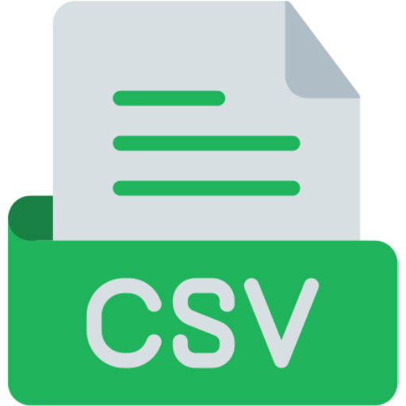

Multi-Question Grant Authoring

Upload a CSV or Excel file with questions, or paste your comma-separated questions below. The tool will generate responses for each.
Or paste your comma-separated questions here
Upload your CSV or Excel file
Drag and Drop File Here
Limit 200MB per file - CSV, XLSX
| Response Time | Document Source | Questions | Answers | CSV or DOC |
| 10ms | Smart Tool | What is the typical funding amount for a Smart Grant? | Funding amounts can vary widely depending on the program and project scope, usually ranging from a few thousand to several hundred thousand dollars. |

|
| 10ms | Are there restrictions on how the grant funds can be used? | Yes, funds are typically designated for specific project expenses, such as personnel, materials, and overhead. Always refer to the specific grant guidelines for details. |
|
|
| 10ms | Government | What are the reporting requirements after receiving a Smart Grant? | Grantees are usually required to submit periodic progress reports and a final report detailing project outcomes, expenditures, and impacts. |
|
Frequently Asked Questions?
Funding amounts can vary widely depending on the program and project scope, usually ranging from a few thousand to several hundred thousand dollars.
Yes, funds are typically designated for specific project expenses, such as personnel, materials, and overhead. Always refer to the specific grant guidelines for details.
Grantees are usually required to submit periodic progress reports and a final report detailing project outcomes, expenditures, and impacts.